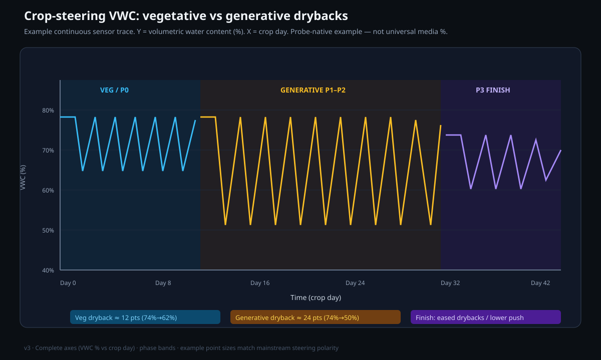

F2 crop steering: the manual for operation each day
After you read this paper, you can prepare, calibrate and operate an automatic irrigation controller for a grow room for the vegetative stage. The paper gives information about the P0 to P3 cycle of each day and the targets for moisture and salt. It also gives information about the controls that you use each day and the safety fail-safes in the system. It shows how to find the cause of a fault.
Purpose and scope
Grower method and temporary values: The default VWC values are the values of one facility. They are start points. They are the readings of the probes, in the units that the probes supply, after a person applies water by hand. The drought test of Caplan gives data for the general method of a controlled water deficit. It does not give data for the values of these setpoints. Calibrate the substrates before you arm the automation.
F2 is an automatic irrigation controller for a grow room for the vegetative stage. It is software that reads the probes for moisture and salt in the root zone. The software selects the time to start each shot of water automatically, and it supplies the water through a pump and valves. You set the targets. The software applies the water.
Crop steering is a method in which you select the water content and the salt content of the root zone. The selection changes the type of growth that is primary in the plant. For a plant that is not in cultivation, a drought is a signal that the time is short. The plant then changes to reproduction. The system gives this signal with a controlled dose, at a controlled time.
Vegetative steering (bulking) keeps the substrate wet. It uses many small shots and a small dryback. Generative steering (flower steering or stress steering) uses a larger dryback, more salt in the root zone, and a smaller number of larger shots. A small, controlled water deficit at the correct time is sufficient to cause a cannabis plant to change to generative growth. The yield does not decrease.[1]
The system has two software layers that operate together. A Home Assistant integration gives you each control and each reading on the screen. An AppDaemon engine (master_crop_steering_app.py) makes the decisions and starts the shots. The room has 3 rows (zones). Each row has one probe for moisture and salt and one valve. One tank, one pump and one main line supply all the rows.
- The ‘Phase (manual set)’ list overrides the automatic phase. It shows the phase that you selected last, not the phase that is in operation at this time. To see the correct phase, read
sensor.crop_steering_current_phase. - It is always safe to disarm the system. When you set
switch.crop_steering_system_enabled = OFF, no shot can start.
Definitions
The system uses three measurements for all its operation. Read these definitions first, because all the other sections use them.

Evidence and limitations
We want each paper to be correct. Thus we examine each paper for information that is not solid. This information comes from the view of one grower, from a small number of sources, or from grower methods that have no controlled test. We identify this information, and we do not show it as solid.
Frequently there is no paper for the decision that you must make. Then we use the reports of other growers and the methods that work in the rooms that we know. This information can help you, but it is not the result of a laboratory test. Use the methods that work for your plants, for your room and for your meters. If a table does not agree with your crop, use the data from your crop and record the difference.
- An emergency stop and a procedure to disarm the system are different. This difference is correct for the safety of the system.
- Irrigation that a sensor controls must use a calibrated VWC, and not the percentage that the sensor gives with no calibration for the medium.
- Phase machines and structures of entities in Home Assistant, for one type of facility.
- The VWC values that the system has at the start as correct values for all substrates.
- The Caplan drought as a full test that one P0–P3 procedure is correct.
If you find an error, make a report. We will correct it. Make the report on GitHub, with the name of the paper and the information that is incorrect. If you have a source, include it: Make a report of an accuracy problem. The regulations, labels and licenses of your area always override each procedure in these papers. The label weak in a paper shows the points where the risk of an error is highest.
The P0–P3 cycle of each day
Each row has four phases during each day. The light schedule controls the phases (the default times are 10:00 for lights on and 22:00 for lights off). The sequence is always the same. First, the substrate dries a small quantity. Then the system fills the substrate again and keeps the VWC stable. At night, the VWC decreases.
- P0 (morning dryback): After the lights come on, the system does not apply water. The substrate dries a small quantity (
p0_dryback_drop_percent, for example 5 to 10%). P1 starts when the dryback is equal to this target, or after the maximum time (p0_maximum_wait_time). The default is 120 min. - P1 (ramp-up): The first shot has the size
p1_initial_shot_size. Each shot is larger than the shot before byp1_shot_size_increment, to a maximum ofp1_maximum_shot_size. The time between shots isp1_time_between_shots. The phase has a minimum number and a maximum number of shots. The phase stops when the VWC is equal to or more thanp1_target_vwc. - P2 (maintenance): This phase is most of the day. The system applies water when the VWC becomes less than
p2_vwc_threshold. If the EC ratio is more than approximately 1.2, the system applies more water to dilute the solution. If the EC ratio is less than approximately 0.8, the system applies less water. - P3 (night): Usual irrigation stops a number of minutes before the lights go off. You set this number with
p3_veg_last_irrigation/_gen_. Only emergency shots start when the VWC is less thanp3_emergency_vwc_threshold. The zones stay in P3 all night.
The two steering modes select the targets that the engine uses. Vegetative steering has a high VWC, a small dryback (approximately 10 to 20%), a lower EC (approximately 3.0 mS/cm), and many small shots. Generative steering has a lower VWC, a larger dryback (approximately 25 to 50%), a higher EC (approximately 4.5 to 6.0 mS/cm), and a smaller number of larger shots. Set the mode for all rows with select.crop_steering_steering_mode, or set the mode for each row. A setting for one row overrides the setting for all rows. With ‘Follow Main’, the row uses the setting for all rows.
| Mode | VWC target | Dryback | EC target | Shots |
|---|---|---|---|---|
| Vegetative | High | Small (10 to 20%) | Approximately 3.0 mS/cm | Many small shots |
| Generative | Lower | Large (25 to 50%) | 4.5 to 6.0 mS/cm | A smaller number of larger shots |
Irrigation controls and targets
Each day, you use some controls. Two arm switches set how much of the system operates. System enabled is the primary arm switch. When it is OFF, no irrigation can occur. If the engine cannot read the switch, it uses OFF as a fail-safe.
Auto irrigation controls only the shots that the engine starts. When it is OFF, you can continue to start manual shots. These two settings give ‘watch mode’.
Some targets control the growth: the VWC values for each phase (p1_target_vwc, p2_vwc_threshold) and the dryback targets. The EC targets for each phase and each mode (ec_target_veg_p0..p3 and ec_target_gen_p0..p3) also control the growth. The selection lists for each row let you use generative steering in one row and vegetative steering in the other rows. They also let you select the row that receives water first when only one row can start a shot. You can also make groups of zones to control the zones together.
- When the EC stacking switch is ON, the engine can apply less water to increase the EC of the root zone. This setting gives generative steering. The switch is usually OFF for vegetative steering.
- Hardware that you can see: the pump (Tuya plug, approximately 490 W when it operates), the relay of the main line, and the zone valves
switch.f2_row1/2/3. Only one zone receives water at a time. - Selection lists for each row: steering_mode, crop_profile (Follow Main and 7 profiles), group (A to D), and ‘priority’ (‘Critical’, ‘High’, ‘Normal’ or ‘Low’).
- The system calculates the shot time from
substrate_volume,dripper_flow_rate,drippers_per_plantand the shot size in %. Set these values correctly. If you do not, each shot has an incorrect size. - Safety limits for each row:
max_daily_volume(L),shot_size_multiplier, andplant_count.
| System enabled | Auto irrigation | Result |
|---|---|---|
| ON | ON | Usual operation. The engine starts automatic shots, and manual shots also operate. |
| ON | OFF | Watch mode: The system is armed, but it only monitors. Only manual shots operate. |
| OFF | ON or OFF | The system is fully disarmed. The gate stops each shot. |
Set System enabled to ON and Auto irrigation to OFF while you make sure that your numbers are correct. The engine is armed and calculates its decisions, but it does not start shots automatically. You can start manual test shots and monitor the changes in the room before you let the engine operate with full automatic control.
Irrigation decision gates
When the engine makes the decision that a shot is necessary, the shot starts only if all the safety gates, in sequence, let it start. Each gate can stop the shot. The gates prevent an incorrect decision of the automatic system.
- Sequence of the gates for a shot: First, the system is armed. Then Auto irrigation is ON (manual shots bypass this gate). Then the zone is ON and has no manual override. Then no dose is in progress, and the tank is not empty. Then the source pH and EC are in range (default pH 5.8 to 6.2). The last gates are the safety limits: the limit of volume for each day, the maximum EC and the maximum frequency.
- pH or EC not in range: The gate stops the shot and sends an alert to the phone. The alert has an ‘Irrigate Anyway’ button.
- Tank guard: The guard stops a shot only when the low float reads empty. As a result, the system can continue to apply water while the quantity of water in the tank decreases.
Source water can change slowly to a pH or an EC that is not in the range of the gate. This water can cause nutrient lockout or cause damage to the roots. The gate stops the shot and sends an alert to you. Thus the system does not apply a solution with an incorrect pH or EC to the room without an alert.
Calibration procedure
Calibration is the most important step in the procedure. The system operates correctly only if its number entities agree with the values of your substrate. The factory defaults are temporary values (50% VWC and 50% dryback). They are not values for your substrate. Dielectric probes for moisture give different readings in each substrate. Thus a calibration for the substrate is necessary before the numbers give correct information about the substrate.[2]
- 1MonitorUse your usual procedure to apply water by hand for a small number of days. Monitor the VWC of each row. The reading immediately after you apply water is approximately the field capacity (the peak). The reading immediately before the next time that you apply water is the trough. Together they show the range of operation of that row.
- 2Set the rangeSet
field_capacityto a value that is a small quantity more than the highest peak. Setp1_target_vwcto the peak of each row after you apply water. Setp2_vwc_thresholdto a value that is less than this peak by a small number of percent. A smaller difference between these two values gives a smaller range for vegetative steering. - 3Set the drybacksFor vegetative steering, set the dryback to approximately 15 to 20%. For generative steering, set the dryback to approximately 25 to 45%. Set
p0_dryback_drop_percentto 5 to 15%. Set the emergency floor to a value that is less than the usual trough by a small number of percent. - 4Set EC targetsFor vegetative steering, set the EC target to a value that is a small quantity more than the feed EC. For generative steering, set it to a value that is much more than the feed EC. The values
p2_ec_high/low_thresholdare multipliers of the target. At 1.2, the engine dilutes the solution when the EC is more than 120% of the target. At 0.8, the engine applies less water when the EC is less than 80% of the target. - 5Operate and adjustLet the system operate for some cycles in watch mode. Compare the values that the system calculates with the values that the probes measure. Adjust the numbers to make them more accurate.
The growth of the roots changes the readings of the probe during a crop. Thus examine the range at intervals. Do not calibrate one time only.[4]
| Setting | Row 1 | Row 2 | Row 3 | Function |
|---|---|---|---|---|
| p1_target_vwc | 26 | 22 | 18 | The peak VWC. P1 fills the substrate again to this value. |
| p2_vwc_threshold | 22 | 19 | 15 | Apply water when the VWC becomes less than this value. |
| vegetative_dryback_target | 18 | 18 | 18 | The quantity by which P0 dries the substrate (%) |
| p0_dryback_drop | 8 | 8 | 8 | The quantity of dryback in the morning (%) |
| emergency floor | 15 | 14 | 11 | The VWC that starts an emergency shot in P3 at night |
| field_capacity (for all rows) | 30 | 30 | 30 | The VWC peak at saturation (the ‘full’ value) |
Calibrate first, then arm the system. If you use the factory defaults (50% and 50%) without calibration, the engine uses numbers that are not related to your substrate. As a result, the steering has no value.
Procedures for usual operation
Most usual tasks have a safe procedure. We recommend that you use the services of the integration and not the hardware switches directly. The services start the full hardware sequence with all the gates. As a result, the system always does the safety checks.
| Task | Safe method | Information |
|---|---|---|
| Start a manual shot | Use the service crop_steering.execute_irrigation_shot (zone, duration_seconds, shot_type: manual) | Starts the full sequence with all the gates |
| Hardware directly (use it only if no other method is possible) | Pump → main line → valve ON. To stop, set the components OFF in the opposite sequence. | Only one row at a time |
| Set a phase by hand | Change select.crop_steering_irrigation_phase | The change occurs immediately. It bypasses the usual changes of phase. The list then shows that phase. |
| ‘Irrigate Anyway’ override | The button on the phone after an alert for pH or EC | It bypasses only the pH/EC gate, for 30 min. It stops automatically when the readings are again in range. |
| Remove a row from the steering, or set a row to manual override | zone_N_enabled OFF (the row is not in the steering), or zone_N_manual_override ON (the row stays in the steering) | Manual override: you apply water by hand while the row stays in the steering |
| Use generative steering | Select ‘Generative’ in the steering mode (for all rows or for one row) | The setting for one row overrides the setting for all rows |
| Set the water counters to zero | Automatic: each day at midnight and each week on Monday | To set the counters to zero before this time, stop AppDaemon and start it again |
It bypasses the pH/EC gate only for 30 minutes. All the other interlocks continue to operate: system armed, tank not empty, and the limit of volume for each day. It stops automatically when the pH and EC are in range again.
Safety interlocks and troubleshooting
The system has some fail-safes: the pH/EC gate for the source water, a tank dry-run guard, and a blocked-dripper guard. The system also has a fail-safe for the arm switch and a recorded condition. The tank dry-run guard stops a shot only when the low float reads empty. The blocked-dripper guard stops a row for 2 hours after too many shots that fail.
If the system cannot make sure of the condition of the arm switch, it uses the value OFF. The system records its condition at intervals of 5 minutes. After the system starts again, each zone starts in its recorded phase.
To stop the system for more than a short time, use the EMERGENCY button and set System enabled to OFF. The dashboard button EMERGENCY, ALL OFF (script.f2_irrigation_all_off) quickly stops the three hardware components, but the engine stays armed. The engine can start the components again at its next check of the phase, in approximately 60 s. To disarm the engine, set System enabled to OFF.
| Trigger | Effect | Condition of the engine after |
|---|---|---|
| Dashboard EMERGENCY button | Quickly stops the pump, the main line and the valves | The engine is ARMED. It can start shots again at the next check in approximately 60 s |
| System enabled OFF | The gate stops each shot | DISARMED, and the engine stays in this condition |
| Automatic emergency stop of the engine | Internal. The engine stops the row that has the fault | ARMED. The row with the fault stays stopped |
- 1Repair the causeFirst, repair the problem in the hardware. Examples are an empty tank, a bent line, a defective probe and a blockage in a dripper.
- 2Make sure that the hardware is OFFMake sure that the pump, the main line and all the valves show OFF.
- 3Examine the arm condition of the engineExamine System enabled and Auto irrigation before you arm the engine again.
- 4Arm the engine again and do a checkArm the engine again. Then read
sensor.crop_steering_current_phaseto see the phase that is in operation. - 5Monitor one cycleDo not go away. Monitor a full cycle. Make sure that each shot starts correctly. Then you can use the system in automatic operation again.
| Symptom | Possible cause | Procedure |
|---|---|---|
| Zones stay in one phase | The condition for the change to the next phase does not occur, or the target is incorrect | Compare the exit threshold of the phase with the VWC at this time |
| The valve is open, but there is no flow | The pump is OFF, the line is bent, or there is a blockage in a dripper | Examine the pump and the line. Remove the blockage in the dripper. |
| The Status value or the Water-today value is ‘unknown’ | The engine does not operate, or the sensors have no data | Stop AppDaemon and start it again. Make sure that the probes send readings. |
| Frequent alerts for pH or EC | The source water is not in range, or the sensor has drift | Do a test of the solution. Make sure that the pH/EC probe is correct. |
| The blocked-dripper guard stops a row many times | 4 or more shots that fail in 30 min | Remove the blockage in the dripper. The row starts again automatically after 2 h. |
| ‘Irrigation already in progress, skipping’ in each cycle | A flag stays ON after a shot stops before its end | Stop AppDaemon and start it again (ha addons restart a0d7b954_appdaemon). The system reads the phase and the counters from the disk. |
Examine the calibration of the probe before you use EC steering. The source shows that sensor.crop_steering_dryback_percentage and the substrate EC can give values that are too low to be correct (Row 1 at 0.48 mS/cm). Salinity has a strong effect on the readings of dielectric probes.[3]
Expected results and limitations
- The limit of the quality of the steering is the quality of the calibration. The factory defaults of 50% and 50% are temporary values. Before you use automatic operation, replace them with numbers from your substrate.
- Use watch mode first. In watch mode, the system is armed but it only monitors. Thus you can make sure that the thresholds are correct. You can also do a test of the pipes and valves by hand, before you let the system operate with full automatic control.
- The recommended numbers are start points. Adjust them in some cycles. If you do not adjust them, the rooms can receive too much water or not sufficient water.
- Some sensors can give incorrect information. The dryback percentage can have no data, and the EC can show values that are too low to be correct. Make sure that the probe calibration is correct before you use EC steering.
- Fail-safes give protection to the hardware, but they use the sensor readings as correct values. A defective probe or float can cause an incorrect decision, and the values can stay in the ‘safe’ range.
F2 is an accurate controller. It does not give results that are always correct. Monitor your numbers with time on a process-control chart. With this chart, you can find the difference between a signal and the usual variation, before you make a change.[5]
For the cultivation information about the dryback and EC controls, read the paper on coco crop steering. Next, read the paper on the root-zone sensor. It gives information about the probes that the system uses for all its decisions.
References
- Caplan, D., Dixon, M., & Zheng, Y. (2019). Increasing Inflorescence Dry Weight and Cannabinoid Content in Medical Cannabis Using Controlled Drought Stress. HortScience, 54(5), 964-969. https://doi.org/10.21273/HORTSCI13510-18
- Zawilski, B. M., Granouillac, F., Claverie, N., Lemaire, B., Brut, A., & Tallec, T. (2023). Calculation of soil water content using dielectric-permittivity-based sensors - benefits of soil-specific calibration. Geoscientific Instrumentation, Methods and Data Systems, 12, 45-56. https://doi.org/10.5194/gi-12-45-2023
- Qi, Q., Yang, H., Zhou, Q., Han, X., Jia, Z., Jiang, Y., Chen, Z., Hou, L., & Mei, S. (2024). Performance of Soil Moisture Sensors at Different Salinity Levels: Comparative Analysis and Calibration. Sensors, 24(19), 6323. https://doi.org/10.3390/s24196323
- Kang, S., van Iersel, M. W., & Kim, J. (2019). Plant root growth affects FDR soil moisture sensor calibration. Scientia Horticulturae, 252, 208-211. https://doi.org/10.1016/j.scienta.2019.03.052
- Mohammed MA. Statistical Process Control. Cambridge University Press (Elements of Improving Quality and Safety in Healthcare); 2024. https://doi.org/10.1017/9781009326834
Each citation in the paper, for example [1], refers to an item in this list. Each item is a primary source or an instruction from an authority, unless the item shows a different type. The results of cannabis tissue culture change much with the genotype. Before you use the dilutions, hormone doses and local regulations, make sure that they agree with the primary sources.